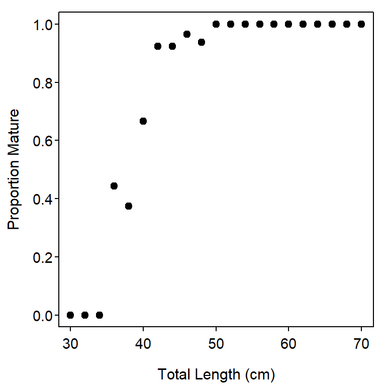
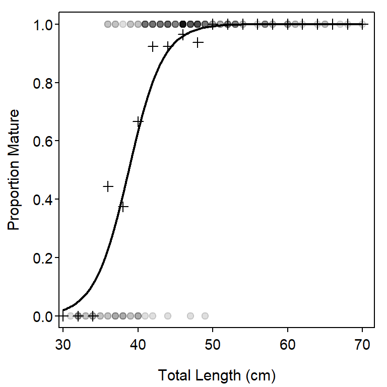
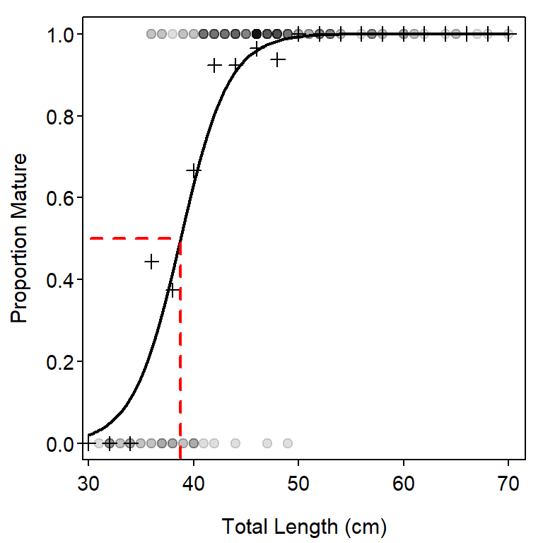
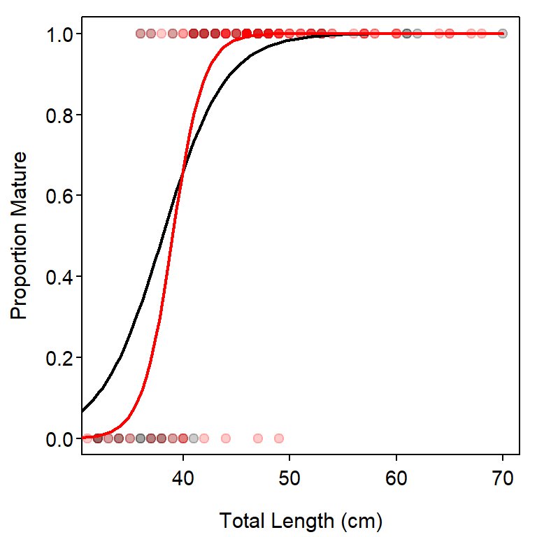

library(FSA) # for headtail()
library(dplyr) # for select(), mutate(), filter()Maturity Analyses
The length-, weight-, or age-at-maturity is important to monitor for fish populations because these metrics are closely tied to reproductive potential and respond to changes in inter- and intra-specific densities and resource availability (Pope et al. 2010). Methods for modeling the relationship between maturity stage and length is demonstrated in this supplement. Results from these modeled relationships are then used to calculate metrics such as length at 50% maturity. These methods extend directly to use with age or weight data.
Setup
Packages
Functions used in this supplement require the following packages. Also note that one function from lubridate and two functions from car are used below with :: so that the whole packages do not need to be loaded.
Data
The total length (length; to the nearest cm), age (years), and maturity (Immature and Mature) state of female Yelloweye Rockfish (Sebastes rubberimus) collected from along the Oregon coast are recorded in YERockFish.csv.1 The stage variable was removed to minimize output below.
1 Download data with CSV link on the linked page.
df <- read.csv("https://raw.githubusercontent.com/fishr-core-team/FSAdata/master/data-raw/YERockfish.csv") |>
select(-stage)
str(df)#R| 'data.frame': 158 obs. of 4 variables:
#R| $ date : chr "9/2/2003" "10/7/2002" "7/18/2000" "6/11/2001" ...
#R| $ length : int 31 32 32 32 32 33 33 34 34 34 ...
#R| $ age : int 10 6 11 11 13 9 10 8 10 11 ...
#R| $ maturity: chr "Immature" "Immature" "Immature" "Immature" ...headtail(df)#R| date length age maturity
#R| 1 9/2/2003 31 10 Immature
#R| 2 10/7/2002 32 6 Immature
#R| 3 7/18/2000 32 11 Immature
#R| 156 8/18/2002 67 50 Mature
#R| 157 10/7/2002 68 88 Mature
#R| 158 4/23/2001 70 66 MatureFor use with glm() below, the maturity variable must be a factor variable, not the character variable that it is currently in df. Variables may be converted to factors with factor(). I use levels= to make sure that the level that represents “being mature” is listed second.2
2 By default, the levels are created in alphabetical order, which would have worked correctly in this case.
df <- df |>
mutate(maturity=factor(maturity,levels=c("Immature","Mature")))The date of capture was also recorded. A new variable that indicates whether the fish was captured before 2002 or in 2002 and after is needed for use in a later example that compares the relationship between maturity and length between two groups. This conversion requires that date be converted to a format that R will recognize as a date. The as.POSIXct() function does this conversion, taking the original dates as its first argument. Additionally, a string is given to format= that describes the format of the dates in the original variable. The codes that may be used in this string are described in ?strptime. Common codes used with fisheries data are
%m: month as a number,%b: month as an abbreviated name (e.g.,Jan,Feb),%d: day of the month,%Y: four-digit year (e.g.,2015), and%y: two-digit (i.e., without the century) year (e.g.,15).
These format codes are separated by the characters that separate the fields in the original date variable (e.g., /, -).
An examination of date above shows that the dates are in month as a number, day of the month, and four digit year format separated by “forward slashes.” Thus, date is converted below to a date format that R will recognize.
df <- df |>
mutate(date=as.POSIXct(date,format="%m/%d/%Y"))
str(df)#R| 'data.frame': 158 obs. of 4 variables:
#R| $ date : POSIXct, format: "2003-09-02" "2002-10-07" ...
#R| $ length : int 31 32 32 32 32 33 33 34 34 34 ...
#R| $ age : int 10 6 11 11 13 9 10 8 10 11 ...
#R| $ maturity: Factor w/ 2 levels "Immature","Mature": 1 1 1 1 1 1 1 1 1 1 ...The year of capture may then be extracted from date with year() from lubridate. Note that the month could be extracted with month(), day of the month with mday(), and day of the year (1-366) with yday(). A variable (era) that indicates the era (pre-2002 or 2002 and after) is then added to the data frame as a factor.
df <- df |>
mutate(year=lubridate::year(date),
era=ifelse(year<2002,"pre-2002","2002 and after"),
era=factor(era,levels=c("pre-2002","2002 and after")))
headtail(df)#R| date length age maturity year era
#R| 1 2003-09-02 31 10 Immature 2003 2002 and after
#R| 2 2002-10-07 32 6 Immature 2002 2002 and after
#R| 3 2000-07-18 32 11 Immature 2000 pre-2002
#R| 156 2002-08-18 67 50 Mature 2002 2002 and after
#R| 157 2002-10-07 68 88 Mature 2002 2002 and after
#R| 158 2001-04-23 70 66 Mature 2001 pre-2002Finally, maturity was not recorded for several individuals, which were removed from further analysis.
df <- df |>
filter(!is.na(maturity))
Maturity Data
Raw maturity data generally consists of a maturity statement (either “mature” or “immature”), size (length or weight), age, sex, and other variables as needed (e.g., capture date, capture location) recorded for individual fish. The maturity variable may need to be derived from more specific data about the “stage of maturation” recorded for each fish. Often, maturity will be recorded as a dummy or indicator variable – “0” for immature and “1” for mature – but this is not required for most modern software. Sex is an important variable to record as maturity should be analyzed separately for each sex (Pope et al. 2010).
Summarized maturity data consists of the proportion of individuals that are mature within each age or length category. Age categories are generally the recorded ages, whereas recorded lengths are often categorized into bins. Age or length categories should be as narrow as possible but include enough individuals such that the proportion mature in each bin is reliably estimated.
In this supplement, the total length of the Rockfish was measured to the nearest cm. Length categories that were 2 cm were chosen to summarize the data to provide reasonable sample sizes (\(>10\) fish) in the length ranges where the proportion of mature fish is most rapidly changing. These length categories are added to the data.frame with lencat() below (as described in Chapter 2 of Ogle (2016)).
df <- df |>
mutate(lcat2=lencat(length,w=2))
headtail(df)#R| date length age maturity year era lcat2
#R| 1 2003-09-02 31 10 Immature 2003 2002 and after 30
#R| 2 2002-10-07 32 6 Immature 2002 2002 and after 32
#R| 3 2000-07-18 32 11 Immature 2000 pre-2002 32
#R| 146 2002-08-18 67 50 Mature 2002 2002 and after 66
#R| 147 2002-10-07 68 88 Mature 2002 2002 and after 68
#R| 148 2001-04-23 70 66 Mature 2001 pre-2002 70The frequency of mature and immature fish in each length category is computed with xtabs() below. The raw frequencies are converted to “row proportions” with prop.table() to see the proportion of fish within each length category that are mature. Finally, a plot of the proportion of mature fish is constructed (Figure 1).
freq <- xtabs(~lcat2+maturity,data=df)
props <- prop.table(freq,margin=1)
round(props,3) # for display only#R| maturity
#R| lcat2 Immature Mature
#R| 30 1.000 0.000
#R| 32 1.000 0.000
#R| 34 1.000 0.000
#R| 36 0.556 0.444
#R| 38 0.625 0.375
#R| 40 0.333 0.667
#R| 42 0.077 0.923
#R| 44 0.077 0.923
#R| 46 0.036 0.964
#R| 48 0.062 0.938
#R| 50 0.000 1.000
#R| 52 0.000 1.000
#R| 54 0.000 1.000
#R| 56 0.000 1.000
#R| 58 0.000 1.000
#R| 60 0.000 1.000
#R| 62 0.000 1.000
#R| 64 0.000 1.000
#R| 66 0.000 1.000
#R| 68 0.000 1.000
#R| 70 0.000 1.000plot(props[,"Mature"]~as.numeric(rownames(props)),pch=19,
xlab="Total Length (cm)",ylab="Proportion Mature")
These results show that the percentage of mature female Yellow Rockfish increases quickly between 34 and 42 cm.
Modeling with Raw Data
Fitting the Logistic Regression Model
Raw maturity data is generally summarized with a logistic regression. A logistic regression is conducted with a binomial response variable and, generally, a quantitative explanatory variable. The relationship between the probability of “success” (\(p\)) and the explanatory variable (length or age) is generally not linear (primarily due to the constraint that the probability is between 0 and 1). This relationship can be linearized by first transforming \(p\) to the odds (i.e., \(\frac{p}{1-p}\)). The odds related the probability of “successes” to “failures.” For example, an odds of 1 indicates that there is an equal probability of success and failure, whereas an odds of 3 indicates that the probability of success is three times the probability of failure.
The transformation to a linear relationship is completed by computing the logarithm of the odds (i.e., \(log(\frac{p}{1-p})\)). The complete transformation from \(p\) to \(log(\frac{p}{1-p})\) is called the logit transformation.
Thus, the linear model in a logistic regression models the log odds as a function of an explanatory variable, \(X\), with
\[ log\left(\frac{p}{1-p}\right) = \alpha + \beta_{1}X \tag{1}\]
In maturity analyses, the logistic regression is used to model the log odds of being mature as a function of either length or age. It will be shown later in this supplement how the log odds of being mature are back-transformed to the probability of being mature.
Logistic regressions are fit with glm(), rather than the lm() used in Ogle (2016). For a logistic regression the first argument to glm() is a formula of the form factor~quant where factor and quant generically represent factor and quantitative variables, respectively. The data.frame that contains factor and quant is given to data=. Finally, glm() is forced to use the logit transformation and fit a logistic regression by including family=binomial. For example, the glm() code below will model the log odds of being mature as a function of the length of the Rockfish.
glm1 <- glm(maturity~length,data=df,family=binomial)Parameter estimates are extracted from the glm() object with coef(). Confidence intervals for the parameters of a logistic regression are best estimated with bootstrapping (rather than normal theory). Bootstrapping is performed with bootCase() from car as described in Chapter 12 of Ogle (2016).
bcL <- car::Boot(glm1)
cbind(Ests=coef(glm1),confint(bcL))#R| Ests 2.5 % 97.5 %
#R| (Intercept) -16.9482593 -24.6251636 -10.9477496
#R| length 0.4371786 0.2902476 0.6247417The estimated slope indicates that a 1 cm increase in the length of the Yelloweye Rockfish will result in a 0.437 increase in the log odds that the Rockfish is mature. Changes in log odds are difficult to interpret. However, the back-transformed slope is interpreted as a multiplicative change in the odds of being mature. For example, a 1 cm increase in the length of the Yelloweye Rockfish will result in a 1.548 (i.e., \(e^{0.437}\)) times increase in the odds that the Rockfish is mature.
Predicted Probability of Being Mature
The probability of a fish being mature given the observed value of the explanatory variable (\(x\)) can be computed by solving Equation 1 for \(p\),
\[ p = \frac{e^{\alpha + \beta_{1}x}}{1+e^{\alpha + \beta_{1}}} \tag{2}\]
This prediction is computed with predict(), which requires the glm() object as the first argument, a data.frame with the values of the explanatory variable for which to make the prediction as the second argument, and type="response" (which forces the prediction of the probability, rather than the log odds, of being mature). For example, the predicted probabilities of being mature for female Yelloweye Rockfish that are 32- and 42-cm total length are computed below.
predict(glm1,data.frame(length=c(32,42)),type="response")#R| 1 2
#R| 0.0493342 0.8042766Confidence intervals for the predicted probability are formed by computing the prediction for each bootstrap sample and then extracting the values for the upper and lower 2.5% of these predictions. This process is most easily accomplished by forming a function that represents Equation 2 and then using apply() to apply that function to each row of the matrix containing the bootstrap samples. This is the same process as described in Chapter 12 of Ogle (2016). The code below computes the 95% confidence intervals for the predicted probability of being mature for 32 cm long Yelloweye Rockfish.3
3 Note here that the results of each bootstrapped sample are in t of the Boot() object (i.e., bcL).
predP <- function(cf,x) exp(cf[1]+cf[2]*x)/(1+exp(cf[1]+cf[2]*x))
p32 <- apply(bcL$t,1,predP,x=32)
quantile(p32,c(0.025,0.975))#R| 2.5% 97.5%
#R| 0.005181076 0.138317023Thus, the probability that a 32 cm Yelloweye Rockfish is mature is between 0.005 and 0.138.
A Summary Plot
A plot that illustrates the fit of the logistic regression (Figure 2) is constructed in several steps. First, a base plot that depicts the raw data is constructed. Take special note here that maturity is forced to be numeric between 0 and 1 for the plot and transparent points (as described in Chapter 3 of Ogle (2016)) are used because there is considerable overplotting with the “discrete” maturity and length data.
plot((as.numeric(maturity)-1)~length,data=df,
pch=19,col=rgb(0,0,0,1/8),
xlab="Total Length (cm)",ylab="Proportion Mature")Second, points that represent the proportion mature for each 2-cm length bin are added to the plot with points() (recall that the summaries in props were constructed above). Note that pch=3 plots the points as “plus signs.”
points(props[,"Mature"]~as.numeric(rownames(props)),pch=3)Finally, the fitted line from the logistic regression is added by first using the glm() object to predict the probability of being mature for lengths that span the range of observed lengths and then plotting these values as a line with lines().
lens <- seq(30,70,length.out=199)
preds <- predict(glm1,data.frame(length=lens),type="response")
lines(preds~lens,lwd=2)
Length- or Age-at-Maturity
A common metric in fisheries science is to find the length or age at which a certain percentage of fish are mature. For example, it is common to ask “what is the length or age at which 50% of the fish have reached maturity?” A general formula for computing this metric is found by solving Equation 1 for \(X\),
\[ x = \frac{log\left(\frac{p}{1-p}\right)-\alpha}{\beta_{1}} \tag{3}\]
In the common case of finding \(X\) for 50% maturity (i.e., \(p=0.5\)), Equation 3 reduces to
\[ x = -\frac{\alpha}{\beta_{1}} \tag{4}\]
The age at which 50% of the fish are mature is commonly symbolized as \(A_{50}\). Similarly, the length at which 90% of the fish are mature would be \(L_{90}\).
These calculations are simplified by creating a function to perform Equation 3.
lrPerc <- function(cf,p) (log(p/(1-p))-cf[[1]])/cf[[2]]This functions takes the coefficents from the glm() object as the first argument and the probability of interest (\(p\)) as the second argument. As examples, the lengths at which 50% and 90% of the female Yelloweye Rockfish are mature are computed below.
( L50 <- lrPerc(coef(glm1),0.5) )#R| [1] 38.76736( L90 <- lrPerc(coef(glm1),0.9) )#R| [1] 43.79328Confidence intervals for these values are constructed from the bootstrap samples, similar to what was illustrated above for predicted values.
bL50 <- apply(bcL$t,1,lrPerc,p=0.5)
( L50ci <- quantile(bL50,c(0.025,0.975)) )#R| 2.5% 97.5%
#R| 37.33720 40.20835bL90 <- apply(bcL$t,1,lrPerc,p=0.9)
( L90ci <- quantile(bL90,c(0.025,0.975)) )#R| 2.5% 97.5%
#R| 41.64754 45.78287Thus, for example, the predicted length at which 50% of the Yelloweye Rockfish are mature is between 37.3 and 40.2, with 95% confidence.
The calculation of the \(L_{50}\) may be illustrated on a fitted-line plot (Figure 3) by adding the code below to the code used above to construct Figure 2.
lines(c(0,L50),c(0.5,0.5),lty=2,lwd=2,col="red")
lines(c(L50,L50),c(-0.2,0.5),lty=2,lwd=2,col="red")
Modeling with Summarized Data
Sometimes maturity data is presented in summarized format – that is, the proportion of fish for each length that were mature. Such data can be computed from the original data.frame with the code below. Note that there are two “tricks” in this code. First, the maturity factor variable is coerced to be a numeric variable, but 1 is subtracted from this result because values of 1 for immature and 2 for mature are returned by as.numeric() when applied to a factor variable. Second, the mean of this result is the proportion of ones in the data, which is the proportion of mature fish.
df2 <- df |>
group_by(length) |>
summarize(pmat=mean(as.numeric(maturity)-1),
n=n()) |>
as.data.frame()
headtail(df2)#R| length pmat n
#R| 1 31 0 1
#R| 2 32 0 4
#R| 3 33 0 2
#R| 33 67 1 1
#R| 34 68 1 1
#R| 35 70 1 1Also note that this code is only used here to produce data to illustrate how to analyze summarized data. If one has raw data, as in this supplement, then the methods of the previous section should be used, though the technique used here provides identical answers.
The appropriate logistic regression model is again fit with glm(). However, the left side of the formula is the proportion of “successes” variable and weights= is set equal to the sample size used to compute each proportion. Once the model is fit, the same extractor functions can be used to summarize the results.4
4 glm() and Boot() will return warnings about non-integer number of successes when used in this way.
glm2 <- glm(pmat~length,data=df2,family=binomial,weights=n)
bcL2 <- car::Boot(glm2)
cbind(Ests=coef(glm2),confint(bcL2))#R| Ests 2.5 % 97.5 %
#R| (Intercept) -16.9482593 -25.6337952 -11.4019376
#R| length 0.4371786 0.2980871 0.6561343predict(glm2,data.frame(length=c(32,42)),type="response")#R| 1 2
#R| 0.0493342 0.8042766p32a <- apply(bcL2$t,1,predP,x=32)
quantile(p32a,c(0.025,0.975))#R| 2.5% 97.5%
#R| 0.006303771 0.118633961Note that the coefficients and predictions computed here are the same as in the results from using the raw data. The bootstrapped confidence intervals differ slightly due to the inherent randomization used in bootstrap resampling (and because a small number of bootstrap samples were used to produce this supplement).
Comparing Logistic Regressions Between Groups
Model Fitting
It may be important to determine if the fit of the logistic regression differs between two groups. For example, one may need to determine if the logistic regression parameters differ significantly between fish captured “pre-2002” and those captured in “2002 and after” (recall that these two “eras” are recorded in era in df).
The model required to answer this type of question is a logistic regression version of the dummy variable regression introduced in Chapter 7 of Ogle (2016). Specifically, the right side of the formula in glm() is modified to be quant*factor where quant is the covariate (usually length or age) and factor is the factor variable that identifies the groups being compared. As noted in Chapter 7 of Ogle (2016), this formula is actually shorthand for a model with three terms – quant and factor main effects and the interaction between the quant and factor variables. In this case, the model is fit as shown below.
glm3 <- glm(maturity~length*era,data=df,family=binomial)The significance of terms in a general linear model are computed with a chi-square distribution and summarized in an “Analysis of Deviance Table”, rather than with an F distribution and ANOVA table as with a linear model. Fortunately, the Analysis of Deviance table using Type II tests is also retrieved with Anova() from car.
car::Anova(glm3)#R| Analysis of Deviance Table (Type II tests)
#R|
#R| Response: maturity
#R| LR Chisq Df Pr(>Chisq)
#R| length 68.599 1 < 2e-16 ***
#R| era 0.005 1 0.94541
#R| length:era 3.100 1 0.07831 .
#R| ---
#R| Signif. codes: 0 '***' 0.001 '**' 0.01 '*' 0.05 '.' 0.1 ' ' 1As with the ANOVA table in a dummy variable regression, the Analysis of Deviance table should be read from the bottom. In this case, the interaction term is not signficant which suggests that the slopes for the logit-transformed models do not differ between the eras. The era main effect is also not signficant, which suggests that the y-intercepts for the logit-transformed models do not differ between the eras. Thus, there is no signficant difference in the logistic regressions between fish captured in the two eras.
Comparing Lengths- or Ages-at-Maturity
A p-value for testing whether the \(L_{50}\) differed between groups may be computed from the bootstrapped samples. However, this calculation requires several steps and a good understanding of the parameter estimates from the logistic regression model fit to both groups. Thus, the steps and the parameter estimates are described further below.
Before building the hypothesis test, lets examine the parameter estimates for the logistic regression model.
coef(glm3)#R| (Intercept) length era2002 and after
#R| -27.1314345 0.6956840 14.0137840
#R| length:era2002 and after
#R| -0.3510082Note that the parameter estimates under the (Intercept) and length headings are the intercept and slope, respectively, for the “reference” group in the model. The reference group is the alphabetically first group, unless the levels of the factor variable were changed by the user as was done in this supplement. The order of the levels can be observed with str() or levels().
levels(df$era)#R| [1] "pre-2002" "2002 and after"Thus, the estimated intercept and slope of the logistic regression for the “pre-2002” era fish are -27.131 and 0.696, respectively.
The parameter estimates under the era2002 and after and length:era2002 and after are the differences in intercept and slope between the two eras. Thus, these values need to be added to the intercept and slope for the “pre-2000” era to estimate the intercept and slope for the “2002 and after” era. Thus, the estimated intercept and slope of the logistic regression for the “2002 and after” era fish are -13.118 and 0.345, respectively.
The first step in building the hypothesis test for whether \(L_{50}\) differs between eras is to construct the bootstrap samples from the glm() object.
bcL3 <- car::Boot(glm3)
headtail(bcL3$t)#R| (Intercept) length era2002 and after length:era2002 and after
#R| [1,] -18.80167 0.4746840 6.963441 -0.1613036
#R| [2,] -23.72944 0.6336083 14.644565 -0.3923172
#R| [3,] -45.05273 1.1581163 25.728301 -0.6624715
#R| [997,] -27.95516 0.7594994 13.718180 -0.3952151
#R| [998,] -28.78888 0.7606613 20.036183 -0.5105222
#R| [999,] -34.05215 0.8546306 17.169055 -0.4233520The \(L_{50}\) for fish from the “pre-2002” era is computed for each sample using only the first two columns of the bootstrap sample results (i.e., the intercept and slope for the “pre-2002” era) and the lrperc() function created and used in a previous section. The \(L_{50}\) for fish from the “2002 and after” era is computed similarly but the last two columns in the bootstrap sample results must be added to the first two columns (i.e., produce the intercept and slope for the “2002 and after” era).
L50.pre= apply(bcL3$t[,1:2],1,lrPerc,p=0.5)
L50.post=apply(bcL3$t[,1:2]+bcL3$t[,3:4],1,lrPerc,p=0.5)If there was no difference in \(L_{50}\) between the two eras, then one would expect the means of these two groups to be the same or, equivalently, the mean of the differences in these two value to equal zero. The difference in \(L_{50}\) for each bootstrap sample is computed below.
L50.diff <- L50.pre-L50.postA two-sided p-value may be computed as two times the smaller of the proportions of samples that are less than or greater than 0.5
5 This code exploits the fact that R treats a TRUE as a 1 and a FALSE as a 0 such that the mean of a vector of TRUEs and FALSEs will return the proportion of TRUEs.
( p.L50.diff <- 2*min(c(mean(L50.diff>0),mean(L50.diff<0))) )#R| [1] 0.5405405This result suggests that there is no significant difference in the \(L_{50}\) for fish captured in the two eras (not surprising given that the logistic regression parameters did not differ between eras).
Confidence intervals for the difference in \(L_{50}\) between the eras and the \(L_{50}\) for each era may be computed as before but making sure to use the correct vector of results.
( ci.L50.diff <- quantile(L50.diff,c(0.025,0.975)) )#R| 2.5% 97.5%
#R| -1.856107 4.625132( ci.L50.pre <- quantile(L50.pre,c(0.025,0.975)) )#R| 2.5% 97.5%
#R| 37.25822 40.90922( ci.L50.post <- quantile(L50.post,c(0.025,0.975)) )#R| 2.5% 97.5%
#R| 34.99124 40.29840A Summary Plot
The construction of a plot that illustrates the fitted logistic regression lines for both groups is left largely as an exercise for the reader. Note that the code below uses several of the same ideas shown previously and relies on directions given in Chapter 3 of Ogle (2016).
## Set-up colors
clrs1 <- c("black","red")
clrs2 <- col2rgbt(clrs1,1/5)
## Get predicted values for each era
lvls <- levels(df$era)
lens <- seq(30,70,length.out=99)
pa02 <- predict(glm3,type="response",
data.frame(length=lens,era=factor("2002 and after",levels=lvls)))
pp02 <- predict(glm3,type="response",
data.frame(length=lens,era=factor("pre-2002",levels=lvls)))
## Make the base plot
plot((as.numeric(maturity)-1)~length,data=filter(df,era==lvls[1]),
pch=19,col=clrs2[1],xlab="Total Length (cm)",ylab="Proportion Mature")
points((as.numeric(maturity)-1)~length,data=filter(df,era==lvls[2]),
pch=19,col=clrs2[2])
## Add the two fitted lines
lines(pa02~lens,lwd=2,col=clrs1[1])
lines(pp02~lens,lwd=2,col=clrs1[2])
References
Ogle, D. H. 2016. Introductory Fisheries Analyses with R. CRC Press, Boca Raton, FL.
Pope, K. L., S. E. Lochmann, and M. K. Young. 2010. Methods for Assessing Fish Populations. Pages 325–351 in W. A. Hubert and M. C. Quist, editors. Inland Fisheries Management in North AmericaThird. American Fisheries Society, Bethesda, MD.